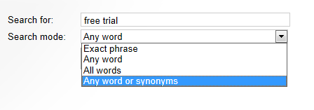

Configuring search assistance features for local indexes
When using the search functionality of locally stored indexes, you can leverage several features that can help users find relevant results.
Note: The features described on this page are only available when using locally stored search indexes.
Setting the search mode
The search mode determines how the search handles expressions with multiple words. The following options are available:
Any word – finds items that contain at least one of the words in the search expression.
Any word or synonyms – works like Any word mode, but also finds items that contain synonyms of at least one word in the search expression. Only works for English by default. See Configuring the synonym search for more information.
All words – finds only items that contain all of the words in the search expression (anywhere in the text).
Exact phrase – finds items that contain the exact search expression, including word order.
To set the search mode, you can either:
Assign a fixed Search mode for your Smart search box or Smart search dialog web parts
Allow users to select the search mode for every search request (available for the Smart search dialog if the Show search mode property is enabled)

Selecting the search mode in a Smart search dialog
Enabling typo-tolerant search (fuzzy searching)
You can configure the smart search to return results for words that are only approximate matches. Typo-tolerant searching allows users to get correct results even if there are misspelled words in the search expression. For example, searching for code also matches words such as core or node.
The system evaluates approximate matches based on Edit Distance (the number of required character substitutions, insertions or deletions).
Note:
The typo-tolerant search only works for search requests that use the Any word Search mode.
Typo-tolerant search may prevent advanced search syntax from working correctly (for example field search). When using typo-tolerant search, we recommend setting the Search options property of the search result web part to None.
To enable the typo-tolerant search:
Configure the web part that you use to get and display search results (Smart search dialog with results or Smart search results).
Check Typo tolerant search in the Search settings category.
Click OK.
The search now finds words that are similar in spelling to the search terms.
Configuring the synonym search
Search requests that use the Any word or synonyms search mode allow users to find a wider set of results based on synonyms.
The synonym search works by expanding all words in the search expression into a list of synonyms. For example, when searching for the words "search assistance", the synonym search expands the expression to: "search explore hunt hunting look lookup research seek assistance aid assist help"
The system looks up the synonyms inside index files stored in the ~\App_Data\CMSModules\SmartSearch\_Synonyms folder. By default, Kentico contains a synonym index for English based on the WordNet lexical database.
Setting the relevance of synonyms
You can change the relevance (result score) that the search assigns to items found through the synonym search. Add the CMSSearchSynonymsWeight key into the appSettings section of your application's web.config file, for example:
<add key="CMSSearchSynonymsWeight" value="0.8" />The key's value must be a decimal number ranging from 0 to 1. A larger number assigns higher relevance to synonyms. If you set 1, the score of synonyms is equal to words in the original unexpanded search expression. The default value is 0.9.
Enabling synonym search for non-English languages
To extend the synonym search for languages other than English, you need to create a Lucene search index containing the synonym data. You can use the following approach:
Obtain a WordNet synonym database for the required language. The database must be in Prolog format.
You can find a list of WordNet projects at http://globalwordnet.org/.
For many languages, the synonym database may not be available in Prolog format. In these cases, you need to convert the database manually.
Download the Lucene.Net Source (Apache-Lucene.Net-3.0.3-RC2.src.zip).
Unzip the Lucene.Net package.
Use the src\contrib\WordNet\Syns2Index\Syns2Index.cs class to generate the synonym index.
You can run the class by debugging in Visual Studio, or using the Visual Studio Command Prompt.
Specify the Prolog database file (.pl extension) and the output directory for the index files as parameters, for example:
Syns2Index wn_s.pl IndexOutput
Compress the synonym index files into a zip archive.
The name of the zip file must match the culture code of the given language. You can use neutral culture codes to represent languages in general (such as fr) or the codes of specific countries/regions (such as fr-FR).
Place the synonym index zip file into the ~\App_Data\CMSModules\SmartSearch\_Synonyms folder in your Kentico web project.
The search expands words into synonyms according to the website's culture (language). The supported languages depend on the synonym index files that are present in your web project.
Setting up substring search and word stemming
Substring search and word stemming are assistance features that allow users to find results for:
Words that contain the search terms
Closely related words
To enable word stemming or substring search, you need to index content using the appropriate analyzers. The smart search uses analyzers to divide text into searchable tokens. Every smart search index has its own analyzer. The analyzers process both the indexed content and the search expressions entered by users. The search classifies words in the search expression as a match if they share at least one token with the indexed content.
To change the analyzer type of a search index:
Open the Smart search application.
Select the Local indexes tab.
Edit (
 ) the index.
) the index.On the General tab, select the Analyzer type.
Click Save.
Rebuild the index.
Substring search
If you create your search indexes using substring analyzers, the search returns results for items that contain the search terms inside larger words or text sequences. Select one of the following analyzer types:
|
Analyzer type |
Description |
|
Subset |
Indexes with subset analyzers return results for all words that contain the search term (the analyzer creates tokens for all possible substrings in words). For example, searching for net matches words such as net, Internet, network or kinetic. |
|
Starts with |
Allows searching for all words that start with the search term (creates tokens for all prefixes contained in words, including the whole word). For example, searching for test matches words such as test, tests, tester... |
The Subset and Starts with analyzers use the following steps to process text:
Divide text into "words"
Create search tokens for the substrings inside the words (according to the analyzer type)
By default, the words created in the first step may contain the following characters:
word characters (upper and lower case letters, numbers, underscores)
at symbols (@)
periods ( . )
Any other characters split the text into separate words. This allows the analyzers to correctly create substring search tokens for text entities such as e-mail addresses and internet domain names.
To customize how the analyzers separate text into words:
Write a regular expression matching all characters that you want to allow inside words.
Add the CMSSubsetAnalyzerWordRegex key into the appSettings section of your application's web.config file, and set the regular expression as the value, for example:
<add key="CMSSubsetAnalyzerWordRegex"value="(\w|@|\.|\$)+"/>
The sample expression above allows the dollar sign in addition to the default characters. As a result, search indexes with Subset or Starts with analyzers can now find expressions such as: $Var
Note: After changing the value of the CMSSubsetAnalyzerWordRegex key, you need to Rebuild your search indexes that use Subset or Starts with analyzers.
Word stemming
Stemming is the removal of suffixes from words. If you create your search indexes using stemming analyzers, the search matches words that have the same basic meaning, but different inflection. For example, users can find:
Inflected words when searching for a stem (program -> programs, programming)
Word stems when searching for inflected words (trusted, trusting -> trust)
Any words that share the same stem as the search terms (conditional -> conditions)
Stemming does not find matches for all words that share the same morphological root — only words that have an identical or very similar meaning. For example, the words "flawed" and "flawless" do not have the same stem. Please keep in mind that word stemming does not work perfectly for all word combinations.
The smart search stemming analyzers are based on the Porter Stemming Algorithm.
The stemming analyzers process text in two steps:
Divide text into tokens (words) using a base analyzer.
Reduce the tokens into their stem form.
You can select three variations of stemming analyzers, each with a different base analyzer:
|
Analyzer type |
Base analyzer description |
|
Simple with stemming |
Divides text into tokens at non-letter characters. |
|
Stop words with stemming |
Uses a predefined collection of stop words to divide text. |
|
White space with stemming |
Divides text at whitespace characters. |
When users search for text using an index with a stemming analyzer, the analyzer also processes the search expression. As a result, the search finds all items containing words that share the same stem.
Note: The default stemming analyzers only work for English text.